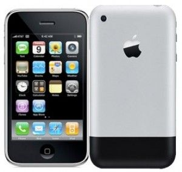

El iPhone de Apple fue anunciado el 9 de enero de 2007 en la keynote de Steve Jobs durante la Macworld. Sin embargo, su historia comenzó años antes, en 2004, cuando Apple vio que el éxito del iPod podía verse amenazado por la llegada de los smartphones con reproductores de música. Para competir, primero colaboraron con Motorola y Cingular, pero el resultado, el Motorola ROKR, no tuvo éxito. En 2005, Apple decidió desarrollar su propio teléfono, apostando por un diseño innovador, una pantalla multitáctil y un sistema operativo basado en macOS. Durante 2006, el equipo de ingenieros trabajó intensamente en el Proyecto Purple 2, enfrentando desafíos como la autonomía y la integración del software. Finalmente, a finales de ese año, Steve Jobs presentó el iPhone a Cingular, asegurando su apoyo para revolucionar la industria de la telefonía móvil.

📅 Línea de Tiempo del iPhone
📌 2007 – iPhone 2G
🔹 Primer iPhone presentado por Steve Jobs.
🔹 Pantalla multitáctil sin teclado físico.
🔹 Conexión EDGE (sin 3G) y cámara de 2 MP.
📌 2008 – iPhone 3G
🔹 Se introduce la App Store.
🔹 Compatible con redes 3G para navegación más rápida.
🔹 Diseño con bordes curvos y trasera de plástico.
📌 2009 – iPhone 3GS
🔹 Procesador más rápido y grabación de video.
🔹 Control por voz (precursor de Siri).
🔹 Soporte para copiar y pegar texto.
📌 2010 – iPhone 4
🔹 Pantalla Retina con mayor resolución.
🔹 Diseño con marco de acero y cristal.
🔹 Introducción de la cámara frontal (para FaceTime).
📌 2011 – iPhone 4S
🔹 Se lanza Siri, el asistente de voz.
🔹 Cámara de 8 MP y grabación en Full HD 1080p.
🔹 Nuevo procesador A5 de doble núcleo.
📌 2012 – iPhone 5
🔹 Pantalla más grande (4"), diseño más delgado.
🔹 Introducción del conector Lightning.
🔹 Soporte para redes 4G LTE.
📌 2013 – iPhone 5S y 5C
🔹 Touch ID (lector de huellas dactilares).
🔹 Primer procesador de 64 bits (A7).
🔹 iPhone 5C: Modelo de plástico en varios colores.
📌 2014 – iPhone 6 y 6 Plus
🔹 Pantallas más grandes (4.7" y 5.5").
🔹 Diseño con bordes redondeados.
🔹 Introducción de Apple Pay.
📌 2015 – iPhone 6S y 6S Plus
🔹 3D Touch (detecta presión en la pantalla).
🔹 Cámara mejorada a 12 MP.
🔹 Live Photos (fotos con movimiento).
📌 2016 – iPhone 7 y 7 Plus
🔹 Primer iPhone sin puerto de audífonos 🎧.
🔹 Cámara dual con modo retrato en el 7 Plus.
🔹 Resistencia al agua y nuevo color Jet Black.
📌 2017 – iPhone 8, 8 Plus y iPhone X
🔹 Carga inalámbrica con vidrio en la parte trasera.
🔹 iPhone X: Pantalla sin bordes y Face ID.
🔹 Se elimina el botón de inicio en el iPhone X.
📌 2018 – iPhone XR, XS y XS Max
🔹 Mejoras en Face ID y pantalla OLED.
🔹 iPhone XR con pantalla Liquid Retina.
🔹 Dual SIM en algunos modelos.
📌 2019 – iPhone 11, 11 Pro y 11 Pro Max
🔹 Modo noche en la cámara 📷.
🔹 Procesador A13 más eficiente.
🔹 Tres cámaras en los modelos Pro.
📌 2020 – iPhone 12, 12 Mini, 12 Pro y 12 Pro Max
🔹 Diseño con bordes planos (inspirado en el iPhone 4).
🔹 Soporte para redes 5G.
🔹 Tecnología MagSafe para accesorios.
📌 2021 – iPhone 13, 13 Mini, 13 Pro y 13 Pro Max
🔹 Notch más pequeño y batería mejorada.
🔹 Pantalla ProMotion a 120 Hz en los modelos Pro.
🔹 Mejoras en el modo cinematográfico de video.
📌 2022 – iPhone 14, 14 Plus, 14 Pro y 14 Pro Max
🔹 Dynamic Island en los modelos Pro.
🔹 Modo Acción para grabación de video.
🔹 Emergencia por satélite en caso de accidentes.
📌 2023 – iPhone 15, 15 Plus, 15 Pro y 15 Pro Max
🔹 Se reemplaza el puerto Lightning por USB-C.
🔹 Titanio en los modelos Pro (más ligero y resistente).
🔹 Mejoras en la cámara con zoom óptico x5.